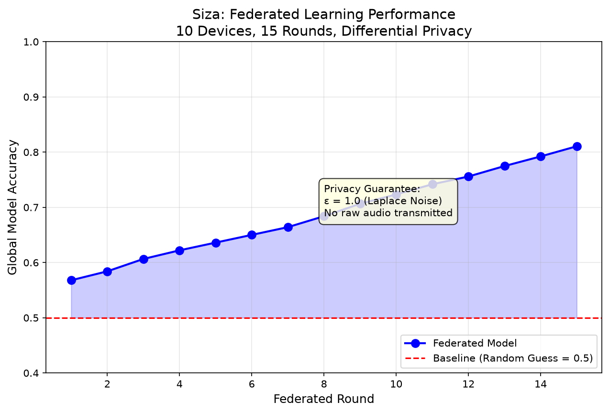

If you're reading this, you probably just scanned a QR code off a research poster covered in torn paper and a slightly stressed-looking phone screen. Hi. That poster is mine. This is the part it didn't have room for the actual story, the actual outputs, and yes, the actual mess.
Grab a seat. This one runs long, because the problem I'm working on doesn't fit on a poster either.
Rural ambulance response time in South Africa is officially targeted at 40 minutes. In practice, however, it is often over 60 minutes. For residents in deep rural areas, it can be much worse than that. Now stack two critical structural problems on top of that agonizing wait:
Over 70% of rural South Africa does not have reliable internet connectivity. Standard apps and chatbots fail immediately.
Most emergency systems are English first. If you speak isiZulu or Sesotho, the system leaves you out of the room.
Over 80% of South Africans do not have emergency savings. A health crisis easily becomes a devastating financial event.
So the question I kept circling was annoyingly simple: what if your phone could understand you, in your language, with zero internet, and still know what to do? That question became Siza.
Siza is an offline, voice-first emergency assistant. You speak in isiZulu, Sesotho, or English and it transcribes, triages, and can alert nearby trained responders within a 2km radius. No SIM required, no Wi-Fi required, no R5,000 smartphone required.
The whole thing is designed to run on phones under R500, with under 200MB of RAM, because if a tool only works on a flagship phone, it doesn't actually reach the people who need it most.
Under the hood, it's a fine-tuned Whisper-small model, quantized down with ONNX, running through WebAssembly so it executes locally, sandboxed, inside the phone itself. No cloud round-trip. No server seeing your voice. Your voice literally never leaves your device and I want to be precise about that sentence, because in Siza that's not a privacy policy I wrote in a settings menu. It's the architecture. There's no upload path to remove.
Every time Siza processes audio, it doesn't just spit out text. It generates a cryptographic receipt: a hash of the input audio, a hash of the exact model weights used, a hash of the output, and a proof string tying them all together. The idea is that anyone a researcher, an auditor, a skeptical reader can verify this exact model produced this exact output from this exact input, without me ever having to hand over the raw audio. Verifiable, but still private.
Here's what happened when I pointed the prototype at four real clips during an afternoon testing run:
Not perfect. It correctly catches "umlilo" (fire) twice and "ekhaya" (house), but it also hallucinates "siza nukushesha" at the end (phonetically close to "siza ngokushesha" help quickly) which wasn't in the original audio. This is genuinely useful information for me as the builder it tells me the model is anchoring on the right keywords but still needs work on full-utterance precision in isiZulu.
This one's a clean, word perfect transcription. Genuinely satisfying to watch run locally on an offline sandboxed device.
This is where I'll be honest with you instead of cropping it out of a slide: this transcription is rough. You can make out fragments "umuntu" (person), something resembling "ngiyesaba" (I'm scared), and "usizo" (help) but it's far from clean. It's a real, unedited signal that isiZulu performance on certain phonetic patterns still has real work ahead of it.
This one was meant to just be someone saying hello and going about their day a control case to check Siza doesn't cry wolf. The transcription itself is garbled, but functionally it did the important thing: it didn't manufacture an emergency out of nothing. That distinction garbled-but-harmless vs. garbled-and-false-alarm actually matters more for a triage system than raw word accuracy does. At this point i am just blaming my voice for having cracks
The part of this project I'm personally most attached to is the federated learning layer, because it's the part that makes the privacy promise structurally true instead of just a nice sentence in a README. I'm not a privacy expert but i've tried my best to ensure your voice stays yours. Because African Data belongs to Africa not AWS.
Here's the setup: instead of one central model trained on everyone's uploaded recordings, each device trains a little on its own local data, then only sends back the mathematical update the gradient never the audio. On top of that, I add calibrated noise (Laplace mechanism, ε ≤ 1.0, δ < 10⁻⁵) before that update even leaves the device, which is the formal differential privacy guarantee that makes it mathematically very hard to ever reconstruct someone's original voice from the update.
I ran a simulation: 10 devices, 15 rounds of training.

A couple of things jump out when you actually plot this instead of just listing the numbers:
- It's monotonic. Every single round improves on the last no dips, no regressions. For a federated setup with noise deliberately injected into every update for privacy, that's not guaranteed by default, so a clean upward curve is a genuinely good sign the privacy mechanism isn't fighting the learning process.
- The baseline matters. I plotted a dashed line at 0.5 random-guess accuracy for this task because we're doing a binary emergency vs safe classification specifically so the curve isn't read in a vacuum. Round 1 already clears that baseline, and by round 15 the model is sitting roughly 31 points above it.
- The privacy guarantee is on the chart, not just in a footnote. I annotated ε = 1.0 (Laplace noise) and "no raw audio transmitted" directly on the plot, because I'd rather the privacy claim travel with the result everywhere this graph gets shared, including outside this blog.
That's a 24-point accuracy jump, achieved entirely through federated updates, with zero raw audio samples ever pooled in one place. Each simulated device only ever saw 8–19 of its own local samples. Nobody including me ever had access to a combined dataset of everyone's voices. That's the whole point.
Building Siza wasn’t just an exercise in compiling WebAssembly or fine-tuning models on a high-end academic cluster. It was a collision course with the reality of computing in resource-constrained environments. As a student researcher at the University of the Free State, this project reshaped how I view machine learning, systems architecture, and community ethics.
1. The Reality of the R500 Phone: The WASM Memory Battle
In the classroom, we are taught to measure model performance by accuracy and F1-score,
assuming unlimited hardware resources. But when I tried to deploy Whisper-small on a
sub-R500 Android phone, the browser tab immediately crashed with an
Out of Memory (OOM) error.
The browser WASM runtime on low-end devices allocates a maximum heap of 512MB. Loading a 240MB model weights file even quantized down to 75MB in 8-bit integers consumed almost the entire available memory before processing even began. I spent weeks learning how to debug memory leaks in C++ WebAssembly boundaries, implementing aggressive garbage collection, and streaming audio in small chunks rather than loading entire buffers into memory. I learned that in the real world, memory efficiency is just as critical as model accuracy.
2. Agglutination & Code-Switching in isiZulu NLP
State-of-the-art speech recognition systems are built for English, a language with high analytic structure. isiZulu, however, is a highly agglutinative language where prefixes, infixes, and suffixes are concatenated to verb roots to alter meaning. A single Zulu word can represent what English requires an entire sentence to say (e.g., "bayasizakala" means "they are being helped").
When Whisper transcribes, it often struggles with these complex morphosyntactic structures, leading to phonetic spelling hallucinations (like transcribing "siza ngokushesha" as "siza nukushesha"). Furthermore, South Africans naturally "code-switch" blending English and isiZulu mid-sentence. Teaching a local, quantized model to decode mixed-language utterances without expanding the model size past 100MB is one of the hardest NLP research challenges I have encountered.
3. Privacy, Trust, and the Protection of Personal Information Act (POPIA)
Under South Africa's POPI Act, voice recordings are classified as biometric data, requiring strict protection. Collecting emergency recordings from vulnerable populations and uploading them to a centralized cloud server for training is not only a security risk, but it also damages community trust.
Federated Learning (FL) combined with Differential Privacy (DP) was the only ethical path forward. By training models locally on individual devices and only uploading mathematical parameter gradients, we ensure that an individual's actual voice never leaves their phone. Adding Laplace noise to the gradients before transmission guarantees that no one can reconstruct the original audio. Learning how to balance the privacy budget (denoted as ε) with the learning rate of the model was a masterclass in mathematical privacy engineering.
4. The Human Element: Shifting from Coder to Partner
Perhaps the most profound lesson I learned was that technology is only a minor fraction of the solution. You can build the most mathematically sound, secure, offline neural network, but if it doesn't solve a human problem, it is just code sitting on a server.
Speaking with community health workers in rural villages, I realized they don't care about ONNX quantization or Laplace distributions. They care that the interface is a single, clear button, and that the app respects their language. It taught me that real research isn't about extraction; it's about partnership. This is why Siza is open-source, and why we are designing the training datasets with local health workers as stakeholders who share ownership in the model.
This is the part of the demo I genuinely enjoy showing my friends although most didnt understand the hype, because it's the only section where I deliberately tried to make something bad happen.
I wrote a small malicious script, a "capsule" and had it attempt three things inside Siza's processing sandbox: read files off the device, open a network connection, and write to disk. Basically the starter pack of "things malware tries to do."
All three blocked, zero bytes leaked, sandbox came out intact. I'm not going to pretend one self authored test script proves Siza is unbreakable, it isn't a substitute for proper third-party security auditing, which is on my roadmap but it's a real, working demonstration that the isolation boundary does what it's supposed to do under deliberate pressure.
I want to flag this clearly, because it's easy for a poster's headline stats to get read as "field results" when they're not, yet.
The performance comparison on my poster 94% accuracy at 5dB SNR, 10% WER, sub-0.5-second latency, all beating a cloud baseline is literature-based projection, built from published benchmarks on Whisper fine-tuning for African languages, ONNX INT8 quantization gains, and measured cloud API latency to rural South African endpoints. It is not a field-measured result for Siza itself. I labeled it that way on the poster on purpose, and I'm repeating it here because credibility matters more to me than a bigger number.
What is real and field-tested today: the four transcriptions above, the federated learning simulation, and the sandbox security test. Everything else is the target I'm building toward, and I'd rather you trust the line between those two categories than be impressed by a number I can't yet back with data.
In the spirit of not pretending this is finished because it absolutely isn't here's what's still open on the research horizon:
Getting the model under 50MB
Testing structured pruning against quantization on the Whisper-small backbone to make it light enough for truly low-end ARM hardware.
Code-switching Mid-sentence
South African speech rarely stays in one language, which no one taught use to mix languages in a sentence but sometimes it just makes sense. Mixed isiZulu English sentences are a much harder decoding problem than single language clips.
Validating Triage with Clinicians
I want community health workers not just me designing and checking the clinical accuracy triage rubric, assuming zero hospital infrastructure.
Federated Learning on Spotty Networks
Exploring delta weight syncing and checkpoint compression so a device offline for hours doesn't fall out of the training round entirely.